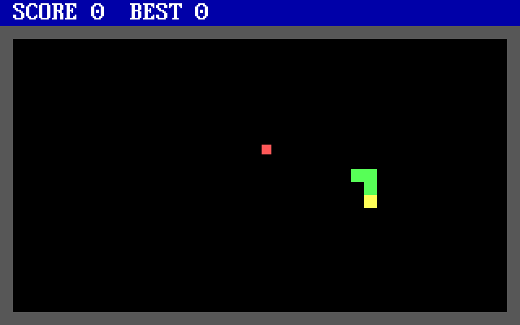
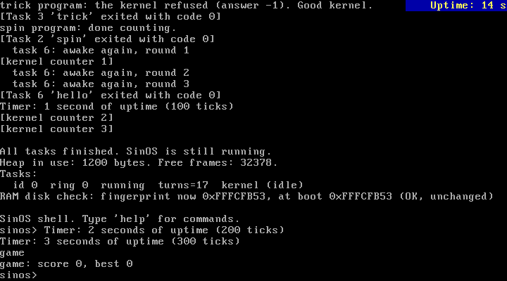

02 Operating system, from scratch
SinOS
It boots. It has snake. Go touch it.
A 32-bit x86 operating system I wrote from zero in C and NASM assembly. Own bootloader, interrupts, paging, multitasking, user programs, a FAT16 disk and a shell. No Linux underneath. Just me and a frankly upsetting number of triple faults.


The actual stuff
What I built
SinOS starts from a two-stage bootloader I wrote myself (it also boots from GRUB), switches the CPU into 32-bit protected mode and hands over to a kernel written in C. From there it sets up its own interrupt handling, a timer and a keyboard driver, so it can actually react to you.
On top of that sits the part that makes it a real OS and not a fancy screensaver: paging and a heap for memory, preemptive multitasking, and user programs that run in ring 3 and have to ask the kernel nicely (system calls) for anything they want. It reads and writes a real FAT16 disk, and the shell lets you poke at all of it.
- Two-stage bootloader
- 32-bit protected mode
- Interrupts, timer, keyboard
- Paging + heap
- Preemptive multitasking
- Ring-3 programs + syscalls
- FAT16 read / write
- VGA mode 13h graphics
The breakdown
How it boots
From power button to snake, one layer at a time.
- 01
Bootloader
Two stages, written in assembly. Loads the kernel off the disk and flips the CPU into protected mode.
- 02
Kernel
C from here on. Interrupt table, timer, keyboard driver, paging and a heap.
- 03
Tasks
Preemptive multitasking. User programs live in ring 3 and talk to the kernel through system calls.
- 04
Disk + shell
A FAT16 driver that reads and writes real files, and a shell to boss them around.
- 05
Pixels
VGA mode 13h graphics, and Sin Snake, an original snake game that saves its high score to disk.
Don't take my word for it.
It runs right here in your browser, inside a PC emulator. Needs a real keyboard. Snake skills not included.
Boot SinOS →